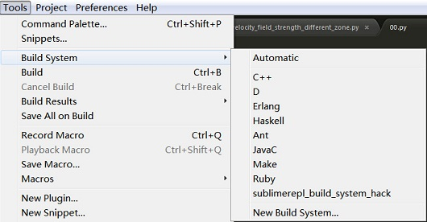
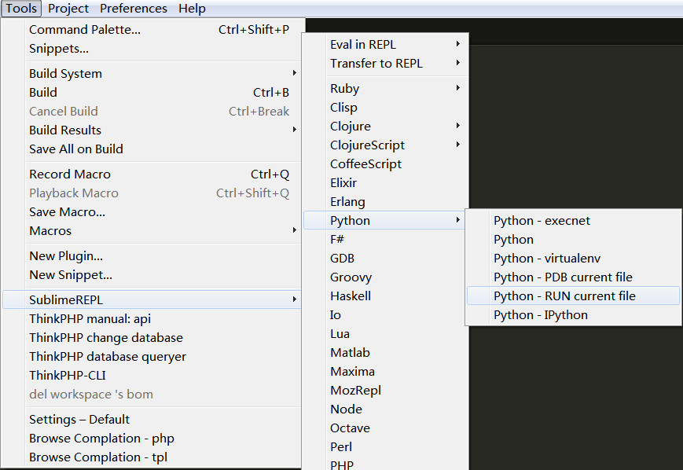

Sublime Text 2中运行Python程序¶
发布于：2013-10-31 | 分类：python/vba/cpp
Sublime Text是一款相当经典的编辑器，自从用上之后便爱不释手；当用其写完一段Python代码而马上可以运行调试之，那就更惬意了。随着不断的使用过程和如上迫切的需求，逐渐积累了下文介绍的在Sublime Text编辑器中直接运行Python程序的两种方法——软件自带的Build功能和SublimeREPL插件。
Build功能¶
通过为编辑器配置代码运行所需信息，可以直接运行代码。查看Tools => Build System如下图所示为内置的一些配置情况。

仿照相应的格式，配置Python程序运行信息。Tools => Build System => New Build System，新建配置文件，删除初始化的内容，写入如下内容并保存到C:\Users\Administrator\AppData\Roaming\Sublime Text 2\Packages\Python\Python.sublime-build。注意：Preferences => Browse Packages…可以打开到Packages，然后选择Python文件夹即可。
{
"cmd": ["python", "-u", "$file"],
"path":"C:/Python27",
"file_regex": "^[ ]*File "(...*?)", line ([0-9]*)",
"selector": "source.python"
}
path一行指定Python的安装位置，根据具体情况确定，其余内容可保持固定。
通过Tools => Build System 查看，此时对比第一张图的初始状态，即会发现新增了Python选项。在Build System菜单选择Python选项后，点击Build或者快捷键Ctrl+B，就会发现代码区下方出现了运行结果。
这个方法对于常规的代码没有任何问题，但是对于一些第三方程序包如numpy， scipy等，或者交互式代码如raw_input()函数，则无法正常执行。这就需要介绍SublimeREPL插件。
SublimeREPL插件¶
SublimeREPL(Sublime Read-Evaluation-Print-Loop)，解释型语言编译运行的过程，装了该插件后即可支持直接在Sublime编辑器上的编译运行和交互。
安装方法不必多述，可以在线或者手动完成。安装完插件后，在Tools菜单下即可看到新增的SublimeREPL菜单项，如下图选择Run Current File即可运行，上面提到的Build命令无法实现的两类问题瞬间不复存在。

至此，算是达成了心愿，也更加肯定了这款神器。然而挑剔一点，美中不足的是运行程序需要点击的菜单过长，多么希望像在其他IDE环境下直接F5运行啊。
Sublime不会让人失望，用户自定义快捷键即可。
自定义快捷键¶
Preferences菜单下的Key Boundings-Default文件过除了软件默认的快捷键，同时也告诉我们了定义快捷键的格式，方便我们在Key Boundings-User文件中自行定义。所以思路为找到SublimeREPL插件菜单命令的定义文件，然后为我们需要的命令定义快捷键。
SublimeREPL插件的菜单命令¶
Preferences => Browser Packages…打开插件安装包位置，依次找到SublimeREPL\config\Python文件夹下的Main.sublime-menu并打开。该文件即是插件菜单的结构及相关参数，从中找到运行Python文件的菜单项的部分：
{
"command": "repl_open",
"caption": "Python - RUN current file",
"id": "repl_python_run",
"mnemonic": "d",
"args": {
"type": "subprocess",
"encoding": "utf8",
"cmd": ["python", "-u", "$file_basename"],
"cwd": "$file_path",
"syntax": "Packages/Python/Python.tmLanguage",
"external_id": "python",
"extend_env": {"PYTHONIOENCODING": "utf-8"}
}
},
...
其中id的值是我们需要的，因为我们正是要为其添加快捷键。另外，菜单文件的位置也是需要先记下的，因为需要为这个命令指定定义的来源。
自定义快捷键¶
Preferences => Key Boundings-User打开自定义快捷键文件，写入如下内容：
[
{
"keys" : ["f5"], // 快捷键，注意小写
"command" : "run_existing_window_command", // 运行定义的命令
"args" : // 命令参数
{
"id" : "repl_python_run", // 上一步查看的命令的id
"file" : "config/Python/Main.sublime-menu" // 菜单定义文件位置
}
}
]
到此为止，可以使用快捷键F5在Sublime Text 2编辑器中快速执行Python代码。